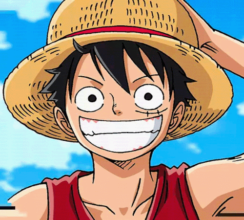
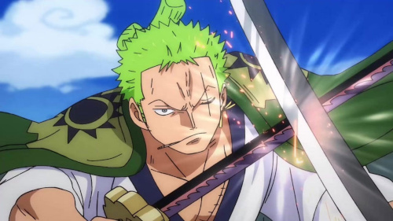
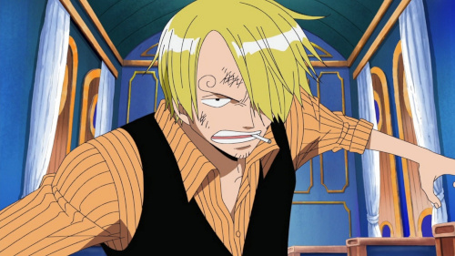

História de cada um dos Big Three dos Mugiwaras!!!
Monkey D. Luffy
Monkey D. Luffy é o personagem principal da série de mangá e anime "One Piece". Ele é o líder da tripulação Pirata do Chapéu de Palha e tem como objetivo se tornar o rei dos piratas. Luffy é conhecido por sua personalidade alegre e despreocupada, bem como por suas habilidades incríveis de luta, que ele adquiriu após comer um fruto do diabo. Luffy é corajoso, determinado e leal aos seus amigos. Embora às vezes seja imprudente e impulsivo, ele tem um bom coração e é respeitado por aqueles que o rodeiam. Ao longo da série, Luffy tem enfrentado muitos desafios e superado obstáculos para chegar mais perto de seu objetivo. Com sua personalidade cativante e suas habilidades notáveis, Luffy é um dos personagens mais queridos e emblemáticos da série.
Roronoa Zoro
Roronoa Zoro é um personagem fictício da série de mangá "One Piece". Ele é um dos personagens principais e o primeiro a se juntar ao protagonista Monkey D. Luffy em sua jornada para se tornar o rei dos piratas. Zoro é conhecido por sua habilidade com espadas e é considerado um dos mais fortes personagens da série. Além disso, ele desempenha um papel importante no grupo, atuando como segundo-em-comando do bando. Zoro tem três espadas, sendo que uma delas é lendária, e ele se dedica a se tornar o melhor espadachim do mundo. Ele é destemido, determinado e leal aos seus amigos, sempre pronto a lutar pelo que acredita. Embora às vezes seja teimoso e impulsivo, Zoro tem um bom coração e é respeitado por seus companheiros de tripulação. Ao longo da série, ele tem desenvolvido suas habilidades e fortalecido seu caráter, tornando-se um dos personagens mais queridos e emblemáticos da série.
Vinsmoke Sanji
Sanji é um personagem fictício da série de mangá e anime "One Piece". Ele é um dos personagens principais e é membro da tripulação do protagonista Monkey D. Luffy. Sanji é conhecido por suas habilidades culinárias e por ser um charmoso dono de bar. Além disso, ele é um guerreiro forte e habilidoso, tendo se juntado ao grupo como lutador.Sanji tem um jeito brincalhão e um coração generoso, mas também pode ser teimoso e teimoso. Ele tem uma paixão pelo amor e pela culinária, e sua dedicação à cozinha é igualada apenas pela sua lealdade aos seus amigos. Ao longo da série, Sanji tem desenvolvido suas habilidades de combate e fortalecido seu caráter, tornando-se um membro importante da tripulação.
